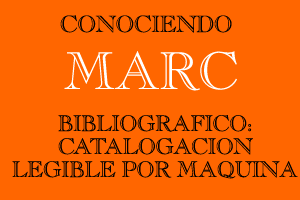

Conociendo MARC Bibliográfico:
Catalogación Legible por Máquina
Escrito por Betty Furrie en conjunto con el Departamento
de Desarrollo de Bases de Datos de la Follet Software Company
Séptima edición revisada y editada por
la Oficina de Desarrollo de Redes y Normas MARC, Biblioteca del
Congreso
Traducción al español de "Understanding
MARC Bibliographic" por Ageo García Barbabosa (Universidad
de Tulane), 2001
(c)2003 con permiso de la Biblioteca del Congreso,
Oficina de Desarrollo de Redes y Normas MARC en colaboración
con la Follett Software Company.
Disponible en inglés por:
Follett
Software Company
1391 Corporate Drive
McHenry, IL 60050
+1-800-323-3397
http://www.fsc.follett.com/ |
Biblioteca
del Congreso
Servicio de Distribución de Catalogación
101 Independence Ave., S.E.
Washington, DC 20541-4912
+1-202-707-6100
http://www.loc.gov/cds/ |
|

-
-
Parte I: ¿Qué significa MARC?
Parte II: ¿Porqué es necesario un registro MARC?
Parte III: La terminología usada por MARC y su definición
Parte IV: ¿Cuál es el origen de los registros
MARC?
Parte V: Asuntos relativos a los datos MARC
Parte VI: Conclusiones
-
-
Parte VII: Resumen de los campos MARC 21 usados con mayor frecuencia
Parte VIII: Una lista de otros campos que se presentan con frecuencia
en los registros MARC
Parte IX: La Cabecera
Parte X: Campo 008 para libros
-
-
Parte XI: Una muestra de registros en varios formatos
Parte XII: Registros de materiales audiovisuales: de las fichas
al Formato MARC 21
Bibliografía selecta
Designadores de contenido MARC 21: Un repaso
|